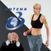

Cristiana Anghel, învăţătoarea rotofeie din Caracal, şi-a proptit fiica în funcţia de inspector principal gradul I în Ministerul Educaţiei, imediat ce finanţatorii ei politici au preluat guvernarea (sursa). Titulara recordului mondial la privare aparentă de hrană în scop propagandistic (cu o performanţă de 70 de zile de simulat greva foamei, în condiţiile în care orice organism normal cedează după maximum două săptămâni) s-a aflat pe statul de plată oficial al lui Felix S.C. Antena 3 (sursa), înainte de a fi răsplătită cu un fotoliu senatorial din partea Partidului Conservator (PC), locuinţe gratuite de la ASE pentru sine şi pentru fată, plus o indemnizaţie lunară de cazare în cuantum de 3146 lei.
“Presa băsistă”, în cooperare cu numiţii “logică de bun-simţ” şi “deducţie elementară” au insinuat că autointitulata grevistă, a cărei singură calitate vizibilă e un metabolism robust, ar fi fost plătită pentru circ politic televizat. Mai concret, dăscăliţa ar fi luat bani doar pentru a juca rolul martirului cerşetor în emisiunile postului Antena 3. Senatoarea USL neagă cu vehemenţă şi tupeu, fără a preciza însă natura muncii prestate pentru canalul de televiziune.
Dieta revoluţionară în 70 de zile, carte de referinţă
ACRU.ro vă prezintă proba care vine în sprijinul afirmaţiilor durduliei parlamentare USL. Irina Cristiana Anghel are dreptate: n-a fost plătită de Trustul Intact pentru apariţiile penibile militante în emisiunile TV, ci pentru drepturi de autor, aşa cum scrie în declaraţia de avere. Iată dovada, în exclusivitate:
Cristiana Anghel, senator prin detoxificarea organismului
Apărută la Editura Felix, în seria Uzina de martiri, cartea de colecţie “Regimul alimentar care te face senator” de Cristiana Anghel s-a vândut mai ceva ca pâinicile Savoria ale doctorului Mencinicopschi, celălalt nutriţionist plătit de Dan Voiculescu. Drept urmare, autoarea dietei de 70 de zile a încasat 3000 de euro ca drepturi de autor şi a devenit parlamentar. Lucrarea a fost distribuită împreună cu Jurnalul Ipocritului Naţional şi s-a constituit într-o operă de referinţă pentru adepţii cerşitului la stat, cu pretenţii de eroi contemporani.
Dacă nu i-a plăcut cartea…
Iulian Crăciun n-a citit cartea Cristianei Anghel. Era ocupat să-şi conducă firma de IT din scaunul cu rotile în care s-a născut. Spre deosebire de învăţătoarea prefăcută, Crăciun a ratat accederea în Parlament, deşi a candidat la aceeaşi funcţie. Românii ştiu să-şi aleagă modelele şi să cearnă valorile.

{kind=link}
{kind=link}
Ipocrizia si turnatoria salveaza Romania!
Draga Felix, vand drepturile de autor pentru slogan … pe 30 de arginti.
Comments on this entry are closed.